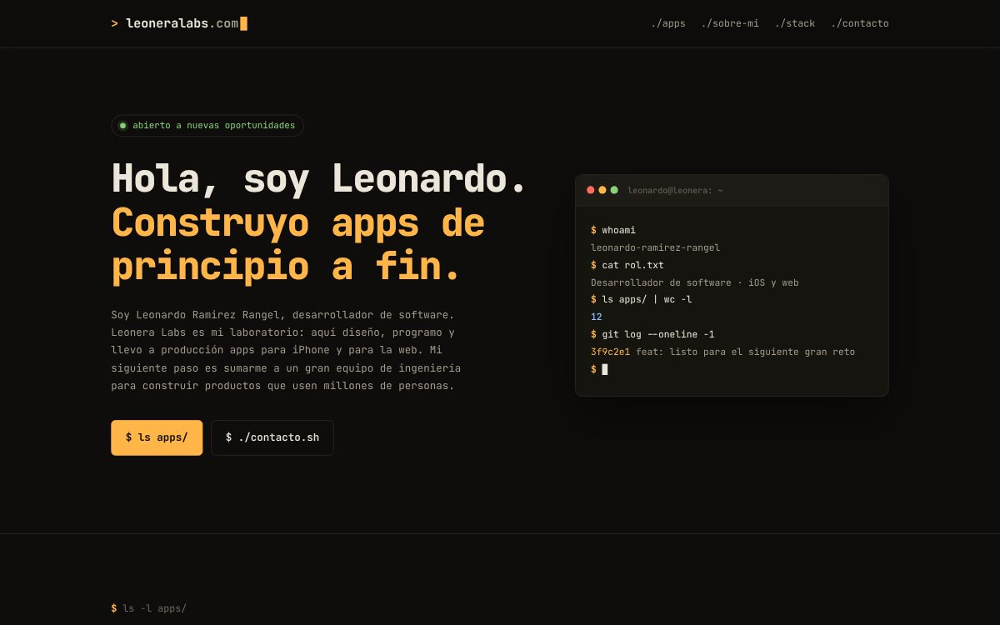
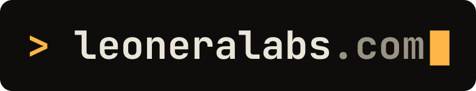
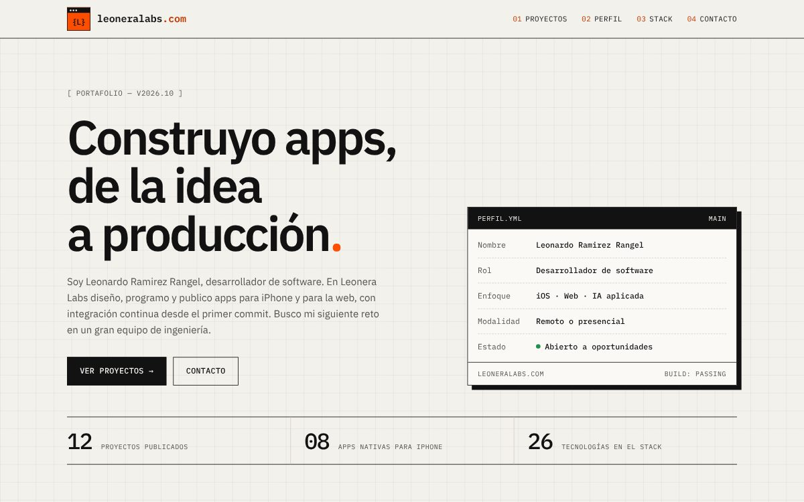
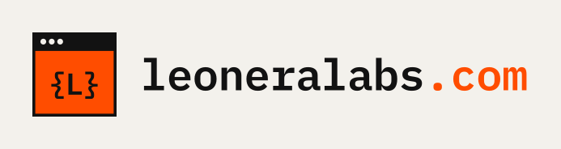
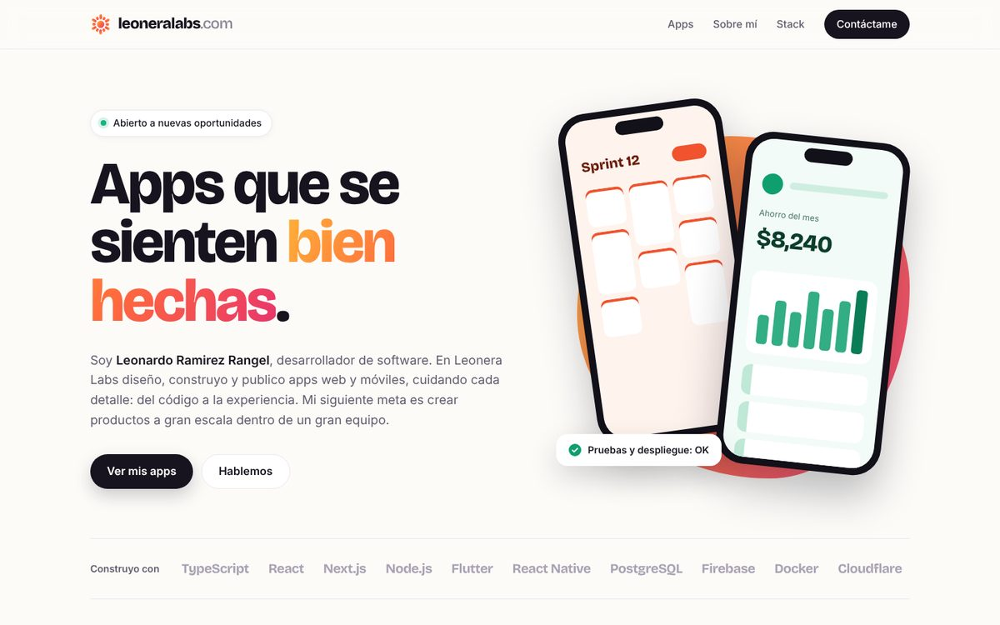
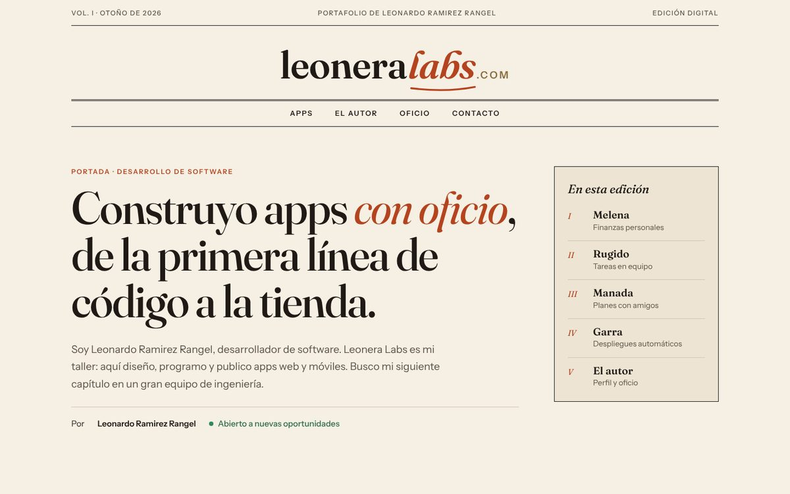
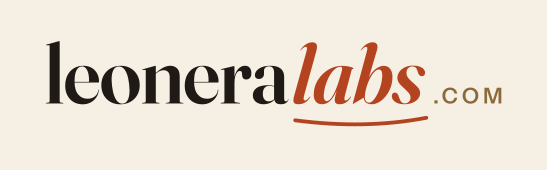

Opción 1 · Terminal
Técnico, inspirado en la línea de comandos, con tema oscuro y claro. Las apps se listan como carpetas y el stack como un archivo JSON.
Ver sitio →

Opción 2 · Laboratorio
Papel cuadriculado y estética de editor de código: cada proyecto en una ventana y el stack como archivos. El logo es una ventana con {L}.
Ver sitio →
Opción 3 · Estudio de producto
Moderno y colorido, como la página de una startup. Maquetas de teléfono y una melena geométrica como símbolo.
Ver sitio →

Opción 4 · Editorial
Cálido y elegante, como una revista. Las apps se cuentan como casos de estudio con índice, citas y capitulares.
Ver sitio →